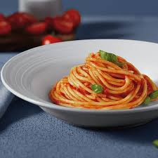
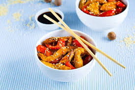
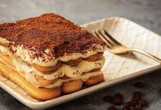

Вкусные рецепты для любителей готовить
В нашем блоге вы найдете множество рецептов на любой вкус и уровень приготовления. От простых блюд до изысканных угощений — мы делимся лучшими кулинарными секретами!
О нас
Мы - команда увлеченных кулинаров и блогеров, стремящихся поделиться своими кулинарными открытиями и вдохновением с вами! Наша цель — помочь вам стать уверенными в своих кулинарных навыках и открыть для себя новые горизонты в мире гастрономии.
Рецепты
Здесь вы найдете сборник наших самых любимых рецептов, от простых закусок до сложных блюд!
1. Итальянская паста с томатным соусом
Ингредиенты: паста, помидоры, чеснок, оливковое масло, базилик, соль, перец.
Описание: Это классическое итальянское блюдо легко приготовить, оно наполнено ароматами свежих ингредиентов и идеально подходит для ужина в кругу семьи.
2. Курица по-азиатски с овощами
Ингредиенты: куриное филе, соевый соус, имбирь, чеснок, брокколи, морковь.
Описание: Быстрое и полезное блюдо, которое можно приготовить за 30 минут. Яркие цвета овощей делают его не только вкусным, но и красивым!
3. Десерт Тирамису
Ингредиенты: маскарпоне, яйца, сахар, кофе, бисквиты.
Описание: Этот итальянский десерт с насыщенным вкусом кофе и кремовой текстурой станет отличным завершением любого обеда.
Контакты
Если у вас есть вопросы или предложения, свяжитесь с нами:
Блог
В нашем блоге мы делимся не только рецептами, но и историями из нашей кулинарной жизни. Узнайте о наших путешествиях по миру кулинарии и открытиях новых вкусов!
Как выбрать правильные специи для вашего блюда?
Специи могут изменить вкус любого блюда. Мы расскажем о том, как правильно их использовать и какие сочетания наиболее удачны.
Путешествие по Италии: Кулинарные традиции
Италия славится своей кухней. В этом посте мы расскажем о самых популярных блюдах и традициях итальянской кухни.
Советы по кулинарии
Наши советы помогут вам стать лучшим поваром на кухне!
Как правильно нарезать овощи?
Правильная нарезка овощей не только ускоряет процесс приготовления, но и делает блюда более эстетичными. Узнайте о различных техниках нарезки.
Как избежать пересолки блюда?
Пересоленные блюда — распространенная проблема. Мы расскажем о том, как правильно добавлять соль и какие есть альтернативы.